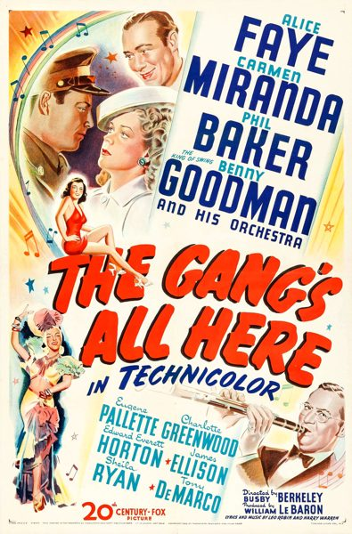

The Gang's All Here
Starring: Alice Faye, Carmen Miranda, Benny Goodman
Director: Busby Berkeley
Writer: Walter Bullock
Producer: William Goetz, William LeBaron
The Gang's All Here is a 1943 American Twentieth Century Fox Technicolor musical film starring Alice Faye, Carmen Miranda and James Ellison. The film, directed and choreographed by Busby Berkeley, is known for its use of musical numbers with fruit hats. Included among the 10 highest-grossing films of that year, it was at that time Fox's most expensive production.
Trivia
- Nominated for: Academy Award for Best Art Direction, Color.
- The working title of this film was The Girls He Left Behind.
- According to a January 7, 1943 news item, composer Harry Warren was originally scheduled to work with lyricist Mack Gordon on the film's score, but Warren instead wrote the picture's songs with Leo Robin.
- A news in The Hollywood Reporter on 30 March 1943 included "Pickin' on Your Momma" in the list of songs to be featured in the film.
Previous Showings
4 Runs • 2 Festivals
Original Billings: 1 run (January 5, 1944)
Original Run: January 5, 1944 (Wednesday - Saturday)
All runs on record (4):
- January 5, 1944 (Wednesday - Saturday)Alice Faye, Carmen Miranda
- October 16 - 17, 1992w/ Weekend in Havana
- October 27, 200620th Century-Fox Film Festivalw/ Springtime in the Rockies
- February 12 - 14, 2011Winter 2011 Early Bette Davis, Val Lewton and morew/ Heaven Can Wait